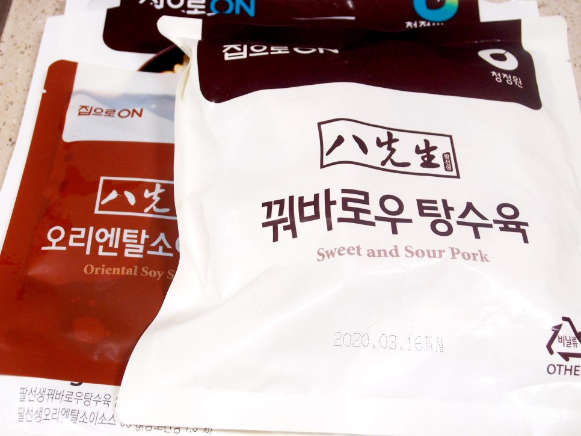
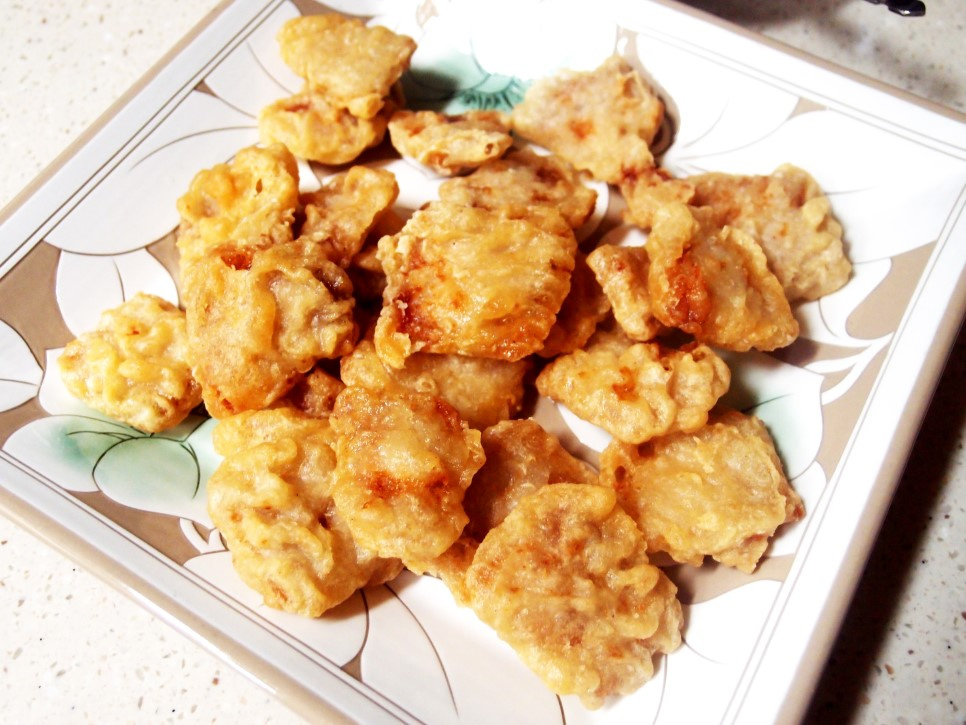
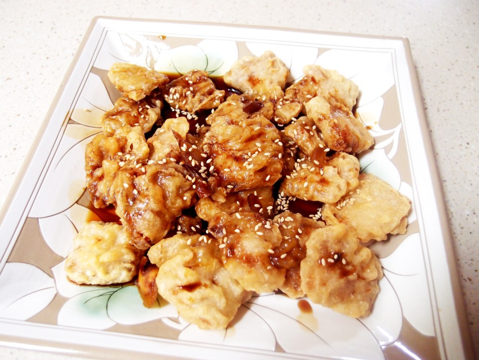

꿔바로우탕수육
한번 튀김을 시작하게 되면 계속해서 튀김을 하게 된다. 기름이 아까우니까. 실컷 튀김을 한 다음엔 폐유로 버려야하기 때문이지요. 계속해서 그냥 두면 산화가 되어서 건강에도 좋지 않아지고요. 그래서 손쉽게 간단하게 그냥 바로바로 튀길 수 있는 팔선생인가...암튼 꿔바로우탕수육을 구입해서는 튀김기에 튀겨서 함께 동봉되어져 있었던 오리엔탈 소스를 뿌려서 먹었는데 ㅎㅎㅎㅎ 이건 꿔바로우 소스가 아닌디요. 이 소스는 유린기 소스이다!!! ㅋㅋㅋㅋ 소스는 잘돗 되어진 듯 하다. 소스가 맛이 없다라는 의미가 아니고 꿔바로우의 소스가 아니라는 뜻이지요. 꿔바로우소스는 완전 찐득찐득하면서 눈이 튀어나올 정도의 산미가 느껴져야 제대로된 꿔바로우 소스이지요. 그리고 튀김은 하얀색으로 쫀득쫀득한 느낌의 전분가루를 이용해서 튀겨낸 것이죠. 뭐 그냥 편하게 튀기기만 하면 되는 것이니 이것으로라도 만족해야겠죠 ㅎㅎ 담부터는 유린기라고 불러 주시는 것이 좋을 듯 싶은디요 ㅋㅋ
조리시간 : 15분 이내
재료
꿔바로우 탕수육300g
꿔바로우오리엔탈소스1봉지
레몬즙 1큰술
통깨 1작은술
조리 순서
| 1. 팔선생 꿔바로우 탕수육과 오리엔탈소스가 들어가져 있네요. 그런데 탕수육이라는 단어를 굳이 붙지지 않아도 되는데 원래 그냥 꿔바로우라고 불리우지요. |  |
| 2. 튀김기에 180도 온도에 맞춰서 튀겨 주었습니다. 튀김반죽을 만들 필요가 없다라는 사실만으로도 충분히 편하지요!!! |  |
| 3. 소스는 봉지채로 팔팔 끓은 물에 넣고는 2분정도 데운 후에 튀겨낸 꿔바로우에 뿌려 주시면 됩니다. |  |